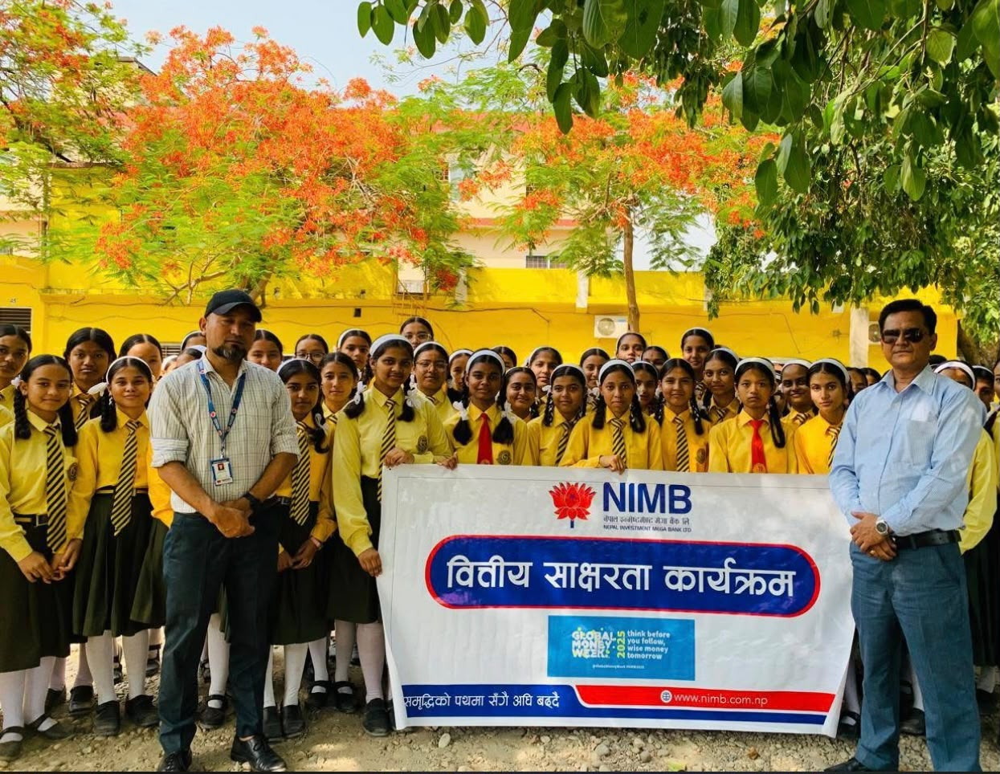
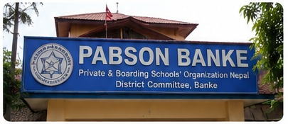
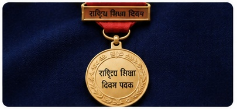
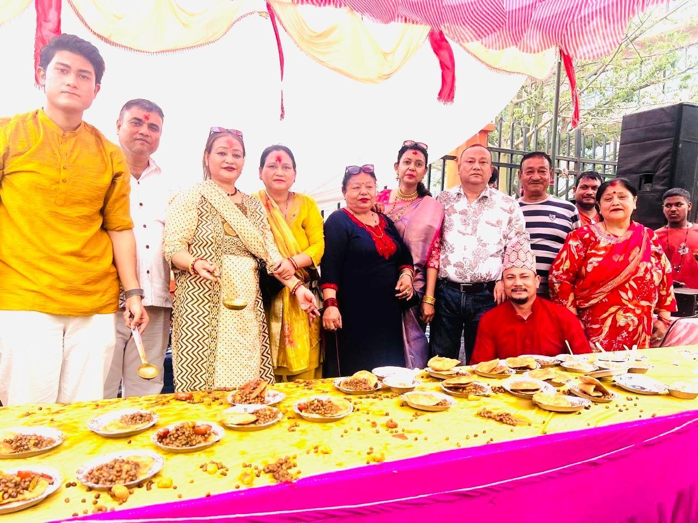
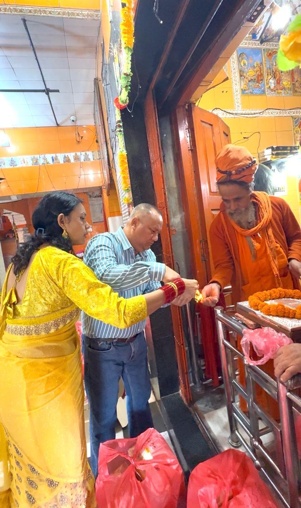

ABOUT HIM
Leadership begins with responsibility.
His journey has been closely connected with education, institutional leadership and service to the community.

Education & Institutional Leadership
Founder and Managing Director of Golden ABC Academy Banke High School, Nepalgunj.

Banke PABSON
Served three times as President of Banke PABSON and also served as Chief Advisor.
Sports Leadership
Currently serving as President of the Lumbini Province Table Tennis Association.
Table Tennis
National-level table tennis player with an active connection to sports and youth development.
Community Involvement
Involved in community organizations, providing foods (prasadam) to all people and strengthening the community.

Recognition
Honoured with the Rastriya Shiksha Divas Padak in recognition of his contribution to education and service.
FAMILY, DEVOTION & COMMUNITY SERVICE
Service through faith and generosity.
His commitment to service extends beyond education, leadership and sports. Together with his family, he has also participated in religious and community activities with a spirit of gratitude, devotion and generosity.

Distributing Prasadam to people
Together with his family, he organized the distribution of prasadam to the devotees and visitors at Bageshwori Temple. The family came together to offer food with devotion and gratitude, sharing prasadam with the pandits, devotees, and everyone present at the temple. This meaningful act reflected his belief in service, generosity, and bringing people together through faith and community.
A Moment of Prayer and Devotion
During the visit, he and his family performed a traditional pooja and offered their prayers with respect and gratitude, making the occasion a meaningful family experience.


Sharing Sweets with the Temple Community
As part of the occasion, the family offered sweets at Bageshwori Temple and shared them with the pandits, devotees and others present at the temple. The gesture reflected their spirit of generosity, respect and community service.
For him, service is not limited to professional responsibilities. It is also about coming together with family, expressing gratitude and sharing kindness with the wider community.